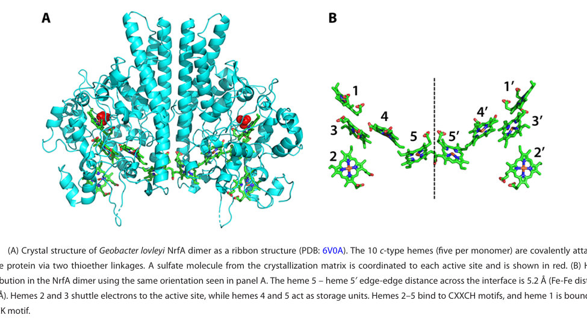

nrfA encodes cytochrome c nitrite reductase, an ammonia-forming periplasmic multiheme enzyme of anaerobic respiratory nitrite reduction in Desulfotalea psychrophila. The protein reduces nitrite to ammonium using cytochrome c as electron donor; direct DP0344 biochemical and operon evidence remains sparse.
| GO Term | Evidence | Action | Reason |
|---|---|---|---|
|
GO:0005509
calcium ion binding
|
IEA
GO_REF:0000002 |
KEEP AS NON CORE |
Summary: KEEP_AS_NON_CORE. Calcium may be a family-level cofactor feature, but the core function is heme-dependent nitrite reduction.
Reason: InterPro detects cytochrome c-552/nitrite reductase family features, and NrfA enzymes are multiheme cytochromes. Calcium binding may be associated with the fold, but the direct functional annotation should center on heme binding and ammonia-forming nitrite reductase activity.
Supporting Evidence:
file:DESPS/nrfA/nrfA-uniprot.txt
Belongs to the cytochrome c-552 family.
|
|
GO:0019645
anaerobic electron transport chain
|
IEA
GO_REF:0000118 |
ACCEPT |
Summary: ACCEPT. NrfA participates in anaerobic respiratory nitrite reduction.
Reason: The reviewed UniProt record identifies NrfA as an ammonia-forming cytochrome c nitrite reductase, a periplasmic respiratory enzyme that consumes reduced cytochrome c during anaerobic nitrite reduction. Falcon supports the conserved NrfA reaction but did not recover DESPS-specific electron-partner experiments.
Supporting Evidence:
file:DESPS/nrfA/nrfA-uniprot.txt
Catalyzes the reduction of nitrite to ammonia, consuming six electrons in the process.
file:DESPS/nrfA/nrfA-deep-research-falcon.md
NrfA-family enzymes catalyze nitrite-to-ammonium reduction as periplasmic respiratory multiheme c-type cytochromes, but the report did not recover DP0344-specific partner or operon experiments.
|
|
GO:0020037
heme binding
|
IEA
GO_REF:0000120 |
ACCEPT |
Summary: ACCEPT. NrfA is a multiheme cytochrome c nitrite reductase.
Reason: Heme binding is integral to NrfA function because the protein is a multiheme cytochrome c nitrite reductase. The UniProt family assignment and InterPro cytochrome c-552 signatures support this annotation.
Supporting Evidence:
file:DESPS/nrfA/nrfA-uniprot.txt
RecName: Full=Cytochrome c-552; AltName: Full=Ammonia-forming cytochrome c nitrite reductase; EC=1.7.2.2.
|
|
GO:0030288
outer membrane-bounded periplasmic space
|
IEA
GO_REF:0000118 |
ACCEPT |
Summary: ACCEPT. The enzyme is periplasmic in Gram-negative bacteria.
Reason: NrfA is annotated as a precursor and belongs to the periplasmic cytochrome c nitrite reductase family. The TreeGrafter localization is consistent with the biology of Gram-negative respiratory nitrite reductases. The available support is family-level rather than a DESPS-specific fractionation or localization experiment.
Supporting Evidence:
file:DESPS/nrfA/nrfA-uniprot.txt
Flags: Precursor.
file:DESPS/nrfA/nrfA-deep-research-falcon.md
The Falcon report describes NrfA as typically soluble periplasmic, but no direct Q6ARF1/DP0344 localization experiment was recovered.
|
|
GO:0042279
nitrite reductase (cytochrome, ammonia-forming) activity
|
IEA
GO_REF:0000120 |
ACCEPT |
Summary: ACCEPT. This is the specific molecular function of NrfA.
Reason: This is the precise EC-supported activity for NrfA. The reviewed UniProt record gives EC 1.7.2.2 and the ammonia-forming nitrite reductase name, and the HAMAP/InterPro assignments provide node-specific support for the catalytic NrfA call rather than relying on a broad c552 family display label. Falcon did not recover a Q6ARF1 purification or kinetic paper, so the strength is conserved-family/EC evidence.
Supporting Evidence:
file:DESPS/nrfA/nrfA-uniprot.txt
RecName: Full=Cytochrome c-552; AltName: Full=Ammonia-forming cytochrome c nitrite reductase; EC=1.7.2.2.
file:DESPS/nrfA/nrfA-uniprot.txt
HAMAP; MF_01182; Cytochrom_C552; 1.
file:DESPS/nrfA/nrfA-uniprot.txt
InterPro; IPR017570; Cyt_c_NO2Rdtase_formate-dep.
file:DESPS/nrfA/nrfA-deep-research-falcon.md
Recent NrfA synthesis supports the six-electron, eight-proton reduction of nitrite to ammonium by periplasmic multiheme c-type cytochromes; no DP0344-specific enzymology was recovered.
|
|
GO:0042597
periplasmic space
|
IEA
GO_REF:0000120 |
ACCEPT |
Summary: ACCEPT. Periplasmic localization is consistent with NrfA function.
Reason: This duplicates the more specific outer membrane-bounded periplasmic space annotation but is still biologically consistent with exported NrfA respiratory nitrite reductases.
Supporting Evidence:
file:DESPS/nrfA/nrfA-uniprot.txt
RecName: Full=Cytochrome c-552; AltName: Full=Ammonia-forming cytochrome c nitrite reductase; EC=1.7.2.2.
|
|
GO:0042128
nitrate assimilation
|
IEA
GO_REF:0000041 |
REMOVE |
Summary: REMOVE. The UniPathway mapping is not supported for this gene. nrfA is an ammonia-forming cytochrome c nitrite reductase used in anaerobic respiratory nitrite reduction; that is not the same as nitrate assimilation.
Reason: Nitrate assimilation is the wrong biological-process endpoint for NrfA. NrfA reduces nitrite to ammonium in anaerobic respiration, whereas nitrate assimilation describes incorporation of nitrate-derived nitrogen into biomass. The correct MF is already present as GO:0042279, and Falcon reinforces the DNRA/respiratory interpretation rather than assimilation.
Supporting Evidence:
file:DESPS/nrfA/nrfA-uniprot.txt
Catalyzes the reduction of nitrite to ammonia, consuming six electrons in the process.
file:interpro/panther/PTHR30633/PTHR30633-deep-research-falcon.md
Family research warns against treating broad c552 family labels as the propagation unit; catalytic or pathway claims need the relevant phylogenetic node or independent EC/HAMAP/InterPro support.
file:DESPS/nrfA/nrfA-deep-research-falcon.md
The report frames NrfA as the nitrite-to-ammonium step of DNRA/anaerobic respiration, not nitrate assimilation.
|
The research report should be a detailed narrative explaining the function, biological processes, and localization of the gene product. Citations should be given for all claims.
You should prioritize authoritative reviews and primary scientific literature when conducting research. You can supplement
this with annotations you find in gene/protein databases, but these can be outdated or inaccurate.
We are specifically interested in the primary function of the gene - for enzymes, what reaction is catalyzed, and what is the substrate specificity? For transporters, what is the substrate? For structural proteins or adapters, what is the broader structural role? For signaling molecules, what is the role in the pathway.
We are interested in where in or outside the cell the gene product carries out its function.
We are also interested in the signaling or biochemical pathways in which the gene functions. We are less interested in broad pleiotropic effects, except where these elucidate the precise role.
Include evidence where possible. We are interested in both experimental evidence as well as inference from structure, evolution, or bioinformatic analysis. Precise studies should be prioritized over high-throughput, where available.
The target gene product (UniProt Q6ARF1; nrfA; DP0344) is annotated as an ammonia-forming cytochrome c-552 nitrite reductase (EC 1.7.2.2) in Desulfotalea psychrophila LSv54, belonging to the multiheme cytochrome c552/NrfA family (user-provided UniProt context; summarized in | Topic | Claim | Evidence type | Support |
|---|---|---|---|
| Target identity | UniProt Q6ARF1 corresponds to nrfA / DP0344 in Desulfotalea psychrophila strain LSv54 (DSM 12343) | Organism-specific (user-provided UniProt context) | User-provided UniProt context |
| Protein name | Q6ARF1 is annotated as cytochrome c-552; alternative names include ammonia-forming cytochrome c nitrite reductase and cytochrome c nitrite reductase | Organism-specific (user-provided UniProt context) | User-provided UniProt context |
| Enzyme class | Q6ARF1 is annotated with EC 1.7.2.2 | Organism-specific (user-provided UniProt context) | User-provided UniProt context |
| Family/domain assignment | Q6ARF1 belongs to the cytochrome c-552 family and carries domains/signatures IPR003321, IPR017570, IPR036280, PF02335 | Organism-specific (user-provided UniProt context) | User-provided UniProt context |
| Ambiguity check | Literature support for Desulfotalea psychrophila LSv54 nrfA/DP0344 is sparse; available retrieved papers largely support general NrfA biology rather than direct characterization of Q6ARF1 | Mixed; direct organism-specific evidence limited | (thorup2017disguisedasa pages 7-8) |
| Core reaction | NrfA enzymes catalyze nitrite → ammonium as part of DNRA; the reaction is a six-electron, eight-proton reduction | General NrfA property | (hird2025fromgenesto pages 1-3, hird2025fromgenesto pages 15-15) |
| Cellular localization | NrfA is typically a soluble periplasmic multiheme c-type cytochrome | General NrfA property | (hird2025fromgenesto pages 3-5, hird2025fromgenesto pages 1-3, hird2025fromgenesto pages 13-15) |
| Heme architecture | Canonical NrfA is usually pentaheme; solved structures crystallize as dimers with five hemes per monomer | General NrfA property | (hird2025fromgenesto pages 1-3, hird2025fromgenesto media 8c8fd690) |
| Active-site motif | The catalytic heme (heme 1) commonly uses a CXXCK motif with proximal Lys ligation; hemes 2-5 usually use CXXCH motifs and are bis-His ligated | General NrfA property | (hird2025fromgenesto pages 3-5, hird2025fromgenesto pages 1-3) |
| Catalytic residues/cofactor | Conserved Arg/Tyr/His second-sphere residues help bind/activate nitrite; many NrfAs contain a nearby Ca2+ required for activity, although some lineages replace this with Arg | General NrfA property | (hird2025fromgenesto pages 3-5) |
| Electron-transfer partners | Known redox partners include NrfH (membrane quinol dehydrogenase), NrfB (periplasmic multiheme electron shuttle linked to NrfCD), and in some taxa CymA | General NrfA property | (hird2025fromgenesto pages 3-5, hird2025fromgenesto pages 15-16) |
| Operon organization | Common genetic organizations include nrfHA and nrfABCDEFG operons; visual summary of these operon types is provided in the recent review figures/tables | General NrfA property | (hird2025fromgenesto pages 11-13, hird2025fromgenesto media 8c8fd690, hird2025fromgenesto media 9a2cca05, hird2025fromgenesto media 8addf68d) |
| Functional role | NrfA is central to dissimilatory nitrate reduction to ammonium (DNRA), helping retain fixed nitrogen in ecosystems | General NrfA property | (hird2025fromgenesto pages 1-3) |
| Quantitative note | Some characterized NrfA enzymes show very high activity, with reported specific activities >1,000 mol NO2- s^-1 per mol NrfA | General NrfA property | (hird2025fromgenesto pages 1-3) |
| Comparative-genomics note for DESPS | Desulfotalea psychrophila LSv54 was included as a reference genome in comparative work that also analyzed nrfA phylogeny, but the retrieved excerpt does not provide direct DP0344/Q6ARF1 functional or operon details | Organism-specific but indirect | (thorup2017disguisedasa pages 7-8) |
Table: This table separates what is directly confirmed for the target protein Q6ARF1 from the user-provided UniProt context versus what is supported only by broader NrfA literature. It is useful for keeping organism-specific annotation distinct from general inference when direct Desulfotalea psychrophila evidence is limited.). Family-level evidence indicates NrfA enzymes are periplasmic, multiheme c-type cytochromes that catalyze nitrite (NO2−) → ammonium (NH4+) as the second step of DNRA (dissimilatory nitrate reduction to ammonium), receiving electrons from membrane quinols via redox partners such as NrfH, NrfB/NrfCD, or in some lineages CymA. (hird2025fromgenesto pages 1-3, hird2025fromgenesto pages 3-5)
Direct, strain-specific primary literature for DP0344/Q6ARF1 (operon context, measured activity, physiology in LSv54) was not accessible in this session; thus, this report separates confirmed target identity from conservative inference based on authoritative NrfA literature. (thorup2017disguisedasa pages 7-8)
Evidence limitation: a key organism-specific source for Desulfotalea psychrophila LSv54—the 2004 genome paper—was identified during search but was not obtainable in-session, so direct confirmation of the DP0344/nrfA locus, neighborhood, regulation, and physiology from the primary genome report could not be checked here; the accessible evidence only shows that D. psychrophila LSv54 was included as a comparative reference genome in later work that also analyzed nrfA phylogeny. (thorup2017disguisedasa pages 7-8)
As a result, confidence is high that Q6ARF1 belongs to the canonical NrfA/cytochrome c-552 ammonia-forming nitrite reductase family, but confidence is lower for DESPS-specific details such as exact operon structure, electron-transfer partner usage, and experimentally demonstrated physiological role in strain LSv54. (hird2025fromgenesto pages 3-5, hird2025fromgenesto pages 1-3)
Therefore, the most defensible annotation is a conservative one: Q6ARF1 should be described primarily from the UniProt-linked identity plus well-supported family-level NrfA properties, while any finer statements about localization partners, pathway context, or regulation in D. psychrophila should be labeled as inference rather than direct strain-specific evidence. (hird2025fromgenesto pages 3-5, hird2025fromgenesto pages 13-15, thorup2017disguisedasa pages 7-8)
Blockquote: This blockquote summarizes the main source limitations affecting annotation of Q6ARF1 in Desulfotalea psychrophila LSv54. It is useful for distinguishing high-confidence family-level inference from lower-confidence strain-specific claims.
DNRA is a respiratory nitrogen transformation that reduces nitrate/nitrite to ammonium, retaining fixed nitrogen in ecosystems. In many bacteria, the nitrite-to-ammonium step is catalyzed by NrfA (ammonia-forming cytochrome c nitrite reductase). (hird2025fromgenesto pages 1-3)
In wastewater metagenome literature, DNRA is described as being primarily catalyzed by either nrfA (a periplasmic cytochrome c enzyme) or nirB (a soluble siroheme-containing nitrite reductase), emphasizing that multiple biochemical solutions exist for nitrite-to-ammonium reduction. (schacksen2024unravelingthegenetic pages 1-2)
NrfA is a soluble periplasmic multiheme c-type cytochrome that catalyzes the reduction of nitrite to ammonium. Mechanistically, this is a six-electron, eight-proton reduction at a single active site. (hird2025fromgenesto pages 1-3)
NrfA is classically a pentaheme cytochrome (five c-type hemes per monomer) and is commonly observed as a dimer in solved structures. (hird2025fromgenesto pages 1-3)
Because NrfA is periplasmic and receives electrons ultimately derived from the membrane quinone pool, it typically requires a redox partner system. Documented partner architectures include:
- NrfH: a membrane-anchored c-type cytochrome quinol dehydrogenase that can deliver electrons directly to NrfA. (hird2025fromgenesto pages 1-3, hird2025fromgenesto pages 15-16)
- NrfB + NrfCD: NrfCD forms a membrane complex (NrfD: multi-pass TM protein; NrfC: iron–sulfur protein) that transfers electrons from quinol to the periplasmic multiheme carrier NrfB, which can then reduce NrfA. (hird2025fromgenesto pages 3-5)
- CymA (in some taxa, e.g., Shewanella): a membrane-associated tetraheme cytochrome that can serve as a quinol oxidase feeding periplasmic reductases, including nitrite respiration systems. (hird2025fromgenesto pages 15-16)
Common operon organizations include nrfHA and larger nrfABCDEFG loci, as summarized visually in the NrfA review figures. (hird2025fromgenesto media 9a2cca05, hird2025fromgenesto media 8addf68d)
The user-provided UniProt record defines Q6ARF1 in Desulfotalea psychrophila LSv54 as cytochrome c-552 / ammonia-forming cytochrome c nitrite reductase (EC 1.7.2.2), gene name nrfA, ordered locus DP0344, and membership in the cytochrome c552 family with multiheme cytochrome-related domain signatures (summarized in | Topic | Claim | Evidence type | Support |
|---|---|---|---|
| Target identity | UniProt Q6ARF1 corresponds to nrfA / DP0344 in Desulfotalea psychrophila strain LSv54 (DSM 12343) | Organism-specific (user-provided UniProt context) | User-provided UniProt context |
| Protein name | Q6ARF1 is annotated as cytochrome c-552; alternative names include ammonia-forming cytochrome c nitrite reductase and cytochrome c nitrite reductase | Organism-specific (user-provided UniProt context) | User-provided UniProt context |
| Enzyme class | Q6ARF1 is annotated with EC 1.7.2.2 | Organism-specific (user-provided UniProt context) | User-provided UniProt context |
| Family/domain assignment | Q6ARF1 belongs to the cytochrome c-552 family and carries domains/signatures IPR003321, IPR017570, IPR036280, PF02335 | Organism-specific (user-provided UniProt context) | User-provided UniProt context |
| Ambiguity check | Literature support for Desulfotalea psychrophila LSv54 nrfA/DP0344 is sparse; available retrieved papers largely support general NrfA biology rather than direct characterization of Q6ARF1 | Mixed; direct organism-specific evidence limited | (thorup2017disguisedasa pages 7-8) |
| Core reaction | NrfA enzymes catalyze nitrite → ammonium as part of DNRA; the reaction is a six-electron, eight-proton reduction | General NrfA property | (hird2025fromgenesto pages 1-3, hird2025fromgenesto pages 15-15) |
| Cellular localization | NrfA is typically a soluble periplasmic multiheme c-type cytochrome | General NrfA property | (hird2025fromgenesto pages 3-5, hird2025fromgenesto pages 1-3, hird2025fromgenesto pages 13-15) |
| Heme architecture | Canonical NrfA is usually pentaheme; solved structures crystallize as dimers with five hemes per monomer | General NrfA property | (hird2025fromgenesto pages 1-3, hird2025fromgenesto media 8c8fd690) |
| Active-site motif | The catalytic heme (heme 1) commonly uses a CXXCK motif with proximal Lys ligation; hemes 2-5 usually use CXXCH motifs and are bis-His ligated | General NrfA property | (hird2025fromgenesto pages 3-5, hird2025fromgenesto pages 1-3) |
| Catalytic residues/cofactor | Conserved Arg/Tyr/His second-sphere residues help bind/activate nitrite; many NrfAs contain a nearby Ca2+ required for activity, although some lineages replace this with Arg | General NrfA property | (hird2025fromgenesto pages 3-5) |
| Electron-transfer partners | Known redox partners include NrfH (membrane quinol dehydrogenase), NrfB (periplasmic multiheme electron shuttle linked to NrfCD), and in some taxa CymA | General NrfA property | (hird2025fromgenesto pages 3-5, hird2025fromgenesto pages 15-16) |
| Operon organization | Common genetic organizations include nrfHA and nrfABCDEFG operons; visual summary of these operon types is provided in the recent review figures/tables | General NrfA property | (hird2025fromgenesto pages 11-13, hird2025fromgenesto media 8c8fd690, hird2025fromgenesto media 9a2cca05, hird2025fromgenesto media 8addf68d) |
| Functional role | NrfA is central to dissimilatory nitrate reduction to ammonium (DNRA), helping retain fixed nitrogen in ecosystems | General NrfA property | (hird2025fromgenesto pages 1-3) |
| Quantitative note | Some characterized NrfA enzymes show very high activity, with reported specific activities >1,000 mol NO2- s^-1 per mol NrfA | General NrfA property | (hird2025fromgenesto pages 1-3) |
| Comparative-genomics note for DESPS | Desulfotalea psychrophila LSv54 was included as a reference genome in comparative work that also analyzed nrfA phylogeny, but the retrieved excerpt does not provide direct DP0344/Q6ARF1 functional or operon details | Organism-specific but indirect | (thorup2017disguisedasa pages 7-8) |
Table: This table separates what is directly confirmed for the target protein Q6ARF1 from the user-provided UniProt context versus what is supported only by broader NrfA literature. It is useful for keeping organism-specific annotation distinct from general inference when direct Desulfotalea psychrophila evidence is limited.).
nrfA is broadly used across bacteria for ammonia-forming cytochrome c nitrite reductase. In the retrieved literature, nrfA is consistently used in this sense (DNRA nitrite-to-ammonium enzyme), supporting that the DESPS target name aligns with its functional class. (hird2025fromgenesto pages 1-3, schacksen2024unravelingthegenetic pages 1-2)
No evidence in the retrieved corpus suggested that nrfA in Desulfotalea psychrophila LSv54 refers to a different, non-homologous gene; however, direct LSv54-specific biochemical/genetic validation was not available here. (thorup2017disguisedasa pages 7-8)
Reaction catalyzed: NrfA catalyzes reduction of nitrite (NO2−) to ammonium (NH4+). (hird2025fromgenesto pages 1-3, hird2025fromgenesto pages 3-5)
Stoichiometry/mechanism: The reaction is described as a six-electron, eight-proton reduction at a single catalytic site (heme 1). (hird2025fromgenesto pages 1-3)
Substrate specificity: The core physiological substrate is nitrite (NO2−). The catalytic architecture is specialized for nitrite binding/activation via conserved second-sphere residues (Arg/Tyr/His) adjacent to the active-site heme. (hird2025fromgenesto pages 3-5)
Cofactors: NrfA is a multiheme c-type cytochrome (typically five c-type hemes per monomer). (hird2025fromgenesto pages 1-3, hird2025fromgenesto pages 3-5)
Heme-binding motifs: In canonical NrfA, hemes 2–5 are commonly bound via CXXCH motifs and are six-coordinate bis-His ligated, while the catalytic heme 1 often uses a CXXCK motif with proximal Lys coordination and a five-coordinate geometry that allows substrate access. (hird2025fromgenesto pages 3-5, hird2025fromgenesto pages 1-3)
Additional conserved features: Many NrfA enzymes contain a Ca2+ near the active site required for activity in many homologs; some lineages replace this role with an Arg residue. (hird2025fromgenesto pages 3-5)
A representative NrfA dimer structure with heme arrangement is shown in a review figure (used here as a mechanistic reference for the family). (hird2025fromgenesto media 8c8fd690)
NrfA is described as a soluble periplasmic cytochrome, consistent with its function receiving electrons from the membrane quinol pool via periplasm-facing redox partners. (hird2025fromgenesto pages 1-3, hird2025fromgenesto pages 3-5)
For Q6ARF1 in D. psychrophila LSv54, direct localization experiments were not found in the retrieved corpus; the periplasmic localization is therefore inferred from family-level characterization and the cytochrome c maturation logic (c-type heme attachment and export to the periplasm). (hird2025fromgenesto pages 13-15)
Given its annotation as NrfA (EC 1.7.2.2), Q6ARF1 most plausibly functions in the DNRA nitrite ammonification step (NO2− → NH4+). (hird2025fromgenesto pages 1-3, schacksen2024unravelingthegenetic pages 1-2)
However, whether LSv54 uses NrfA primarily for energy conservation via DNRA versus ancillary roles (e.g., nitrosative stress detoxification described for some sulfate reducers) could not be determined from the accessible strain-specific literature in this session. (hird2025fromgenesto pages 13-15, thorup2017disguisedasa pages 7-8)
Schacksen & Nielsen (Applied and Environmental Microbiology; Sep 2024; https://doi.org/10.1128/aem.02177-23) analyzed 1,083 high-quality MAGs from 23 full-scale wastewater treatment plants and reported 237/1,083 MAGs contained genes for the complete DNRA pathway; they also observed that DNRA/assimilatory nitrate reduction genes frequently co-occurred with nosZ (N2O reductase), suggesting potential coupling/compatibility between ammonification potential and N2O consumption potential in WWTP communities. (schacksen2024unravelingthegenetic pages 4-7)
They summarize DNRA as being primarily catalyzed by nrfA (periplasmic cytochrome c nitrite reductase) or nirB (siroheme nitrite reductase), reinforcing that nrfA-based ammonification remains a major functional marker in environmental genomics. (schacksen2024unravelingthegenetic pages 1-2)
Hou et al. (Microorganisms; Nov 2024; https://doi.org/10.3390/microorganisms12122454) describe NrfA in Shewanella oneidensis MR-1 reducing nitrite to ammonium within nitrate/nitrite respiration, in a system where nitrite production during nitrate reduction contributes to chemical and biological Fe(II) oxidation processes (NRFO), with the Mtr electron transfer pathway implicated in coupling electron flow. While not DESPS-specific, this is a contemporary example of NrfA’s integration into broader redox networks beyond “standalone” DNRA. (hou2024biologicalandchemical pages 13-15)
Egas et al. (mSystems; Mar 2024; https://doi.org/10.1128/msystems.00967-23) report an acidophilic sulfate reducer (Acididesulfobacillus acetoxydans) that performs DNRA but lacks canonical NrfAH and other known nitrite reductases, identifying alternative cytoplasmic reductases as candidates with strong multi-omics support and providing quantitative physiological constraints (e.g., growth inhibition when nitrite reaches ~0.8–1 mM). This demonstrates that DNRA phenotype does not strictly require nrfA and that genome-based annotation should consider alternative architectures in some lineages. (egas2024anovelmechanism pages 2-5, egas2024anovelmechanism pages 5-7)
Metagenome-centric monitoring of DNRA potential in WWTPs uses nrfA as a key functional marker. In the Danish WWTP MAG set, complete DNRA genetic capacity was found in 237/1,083 MAGs, indicating DNRA potential is common in engineered wastewater ecosystems. (schacksen2024unravelingthegenetic pages 4-7)
These findings are relevant to process control because DNRA retains nitrogen as ammonium (potentially beneficial for ammonia recovery strategies, but potentially undesirable if ammonia must be removed), and because DNRA organisms may overlap genomically with N2O-reduction potential (nosZ co-occurrence). (schacksen2024unravelingthegenetic pages 1-2, schacksen2024unravelingthegenetic pages 4-7)
The 2024 Shewanella study frames NrfA-linked nitrite reduction to ammonium within coupled iron–nitrogen transformations, relevant to sediment/soil redox cycling and remediation contexts. (hou2024biologicalandchemical pages 13-15)
A recent authoritative review (Hird et al., Applied and Environmental Microbiology; Jul 2025; https://doi.org/10.1128/aem.00292-25) summarizes the current consensus that NrfA is a periplasmic pentaheme cytochrome catalyzing nitrite ammonification (six-electron/eight-proton reaction) with conserved structural motifs and lineage-dependent electron-transfer partner systems (NrfH, NrfB/NrfCD, CymA). (hird2025fromgenesto pages 1-3, hird2025fromgenesto pages 3-5)
The same review provides comparative visual summaries of (i) NrfA dimer/heme arrangement, (ii) nrf operon organizations, and (iii) a table-level synthesis of operon/regulator patterns across organisms—useful as a framework for annotating Q6ARF1 once LSv54 genomic neighborhood can be inspected. (hird2025fromgenesto media 8c8fd690, hird2025fromgenesto media 9a2cca05, hird2025fromgenesto media 8addf68d)
Some characterized NrfA enzymes exhibit very high catalytic activity, with reported specific activities >1,000 mol NO2− s−1 per mol NrfA (note: enzyme- and condition-dependent). (hird2025fromgenesto pages 1-3)
In the Schacksen & Nielsen WWTP MAG dataset (Sep 2024): 237/1,083 MAGs contained genes for the complete DNRA pathway, and 527/1,083 (48.7%) MAGs harbored nosZ. (schacksen2024unravelingthegenetic pages 4-7)
In A. acetoxydans (Mar 2024), which lacks NrfAH, resting cells reduced 1 mM nitrate to ammonia in ~9 h and reduced 0.5 mM hydroxylamine to ammonia in 3 h; growth stalled when nitrite accumulated to ~0.8–1 mM, and multiple candidate reductases were strongly upregulated by transcriptomics/proteomics under nitrate-reducing conditions. (egas2024anovelmechanism pages 2-5, egas2024anovelmechanism pages 5-7)
Recommended functional annotation (high confidence at family level):
Q6ARF1 (DP0344; nrfA) encodes an ammonia-forming cytochrome c552 nitrite reductase (NrfA), a periplasmic multiheme c-type enzyme catalyzing nitrite reduction to ammonium as part of DNRA (EC 1.7.2.2). (hird2025fromgenesto pages 1-3, hird2025fromgenesto pages 3-5)
Recommended pathway/localization wording (explicitly inferred):
The enzyme is expected to reside in the periplasm after cytochrome c maturation and to receive electrons from the membrane quinol pool via an NrfA partner system (e.g., NrfH or NrfB/NrfCD; partner identity in LSv54 should be validated by inspecting neighboring genes). (hird2025fromgenesto pages 3-5, hird2025fromgenesto pages 13-15)
What cannot be concluded here (needs DESPS-specific genome/operon inspection or experiments):
Exact operon organization (nrfHA vs nrfABCDEFG), the specific electron donor partner(s), and whether the primary physiological role in LSv54 is energy conservation via DNRA versus detoxification-oriented nitrite reduction were not directly supported by accessible LSv54-specific primary literature in this session. (thorup2017disguisedasa pages 7-8, hird2025fromgenesto pages 13-15)
| Topic | Claim | Evidence type | Support |
|---|---|---|---|
| Target identity | UniProt Q6ARF1 corresponds to nrfA / DP0344 in Desulfotalea psychrophila strain LSv54 (DSM 12343) | Organism-specific (user-provided UniProt context) | User-provided UniProt context |
| Protein name | Q6ARF1 is annotated as cytochrome c-552; alternative names include ammonia-forming cytochrome c nitrite reductase and cytochrome c nitrite reductase | Organism-specific (user-provided UniProt context) | User-provided UniProt context |
| Enzyme class | Q6ARF1 is annotated with EC 1.7.2.2 | Organism-specific (user-provided UniProt context) | User-provided UniProt context |
| Family/domain assignment | Q6ARF1 belongs to the cytochrome c-552 family and carries domains/signatures IPR003321, IPR017570, IPR036280, PF02335 | Organism-specific (user-provided UniProt context) | User-provided UniProt context |
| Ambiguity check | Literature support for Desulfotalea psychrophila LSv54 nrfA/DP0344 is sparse; available retrieved papers largely support general NrfA biology rather than direct characterization of Q6ARF1 | Mixed; direct organism-specific evidence limited | (thorup2017disguisedasa pages 7-8) |
| Core reaction | NrfA enzymes catalyze nitrite → ammonium as part of DNRA; the reaction is a six-electron, eight-proton reduction | General NrfA property | (hird2025fromgenesto pages 1-3, hird2025fromgenesto pages 15-15) |
| Cellular localization | NrfA is typically a soluble periplasmic multiheme c-type cytochrome | General NrfA property | (hird2025fromgenesto pages 3-5, hird2025fromgenesto pages 1-3, hird2025fromgenesto pages 13-15) |
| Heme architecture | Canonical NrfA is usually pentaheme; solved structures crystallize as dimers with five hemes per monomer | General NrfA property | (hird2025fromgenesto pages 1-3, hird2025fromgenesto media 8c8fd690) |
| Active-site motif | The catalytic heme (heme 1) commonly uses a CXXCK motif with proximal Lys ligation; hemes 2-5 usually use CXXCH motifs and are bis-His ligated | General NrfA property | (hird2025fromgenesto pages 3-5, hird2025fromgenesto pages 1-3) |
| Catalytic residues/cofactor | Conserved Arg/Tyr/His second-sphere residues help bind/activate nitrite; many NrfAs contain a nearby Ca2+ required for activity, although some lineages replace this with Arg | General NrfA property | (hird2025fromgenesto pages 3-5) |
| Electron-transfer partners | Known redox partners include NrfH (membrane quinol dehydrogenase), NrfB (periplasmic multiheme electron shuttle linked to NrfCD), and in some taxa CymA | General NrfA property | (hird2025fromgenesto pages 3-5, hird2025fromgenesto pages 15-16) |
| Operon organization | Common genetic organizations include nrfHA and nrfABCDEFG operons; visual summary of these operon types is provided in the recent review figures/tables | General NrfA property | (hird2025fromgenesto pages 11-13, hird2025fromgenesto media 8c8fd690, hird2025fromgenesto media 9a2cca05, hird2025fromgenesto media 8addf68d) |
| Functional role | NrfA is central to dissimilatory nitrate reduction to ammonium (DNRA), helping retain fixed nitrogen in ecosystems | General NrfA property | (hird2025fromgenesto pages 1-3) |
| Quantitative note | Some characterized NrfA enzymes show very high activity, with reported specific activities >1,000 mol NO2- s^-1 per mol NrfA | General NrfA property | (hird2025fromgenesto pages 1-3) |
| Comparative-genomics note for DESPS | Desulfotalea psychrophila LSv54 was included as a reference genome in comparative work that also analyzed nrfA phylogeny, but the retrieved excerpt does not provide direct DP0344/Q6ARF1 functional or operon details | Organism-specific but indirect | (thorup2017disguisedasa pages 7-8) |
Table: This table separates what is directly confirmed for the target protein Q6ARF1 from the user-provided UniProt context versus what is supported only by broader NrfA literature. It is useful for keeping organism-specific annotation distinct from general inference when direct Desulfotalea psychrophila evidence is limited.
References
(thorup2017disguisedasa pages 7-8): Casper Thorup, Andreas Schramm, Alyssa J. Findlay, Kai W. Finster, and Lars Schreiber. Disguised as a sulfate reducer: growth of the deltaproteobacterium desulfurivibrio alkaliphilus by sulfide oxidation with nitrate. mBio, Sep 2017. URL: https://doi.org/10.1128/mbio.00671-17, doi:10.1128/mbio.00671-17. This article has 156 citations and is from a domain leading peer-reviewed journal.
(hird2025fromgenesto pages 1-3): Krystina Hird, Julius O. Campeciño, and Eric L. Hegg. From genes to function: regulation, maturation, and evolution of cytochrome c nitrite reductase in nitrate reduction to ammonium. Jul 2025. URL: https://doi.org/10.1128/aem.00292-25, doi:10.1128/aem.00292-25. This article has 6 citations and is from a peer-reviewed journal.
(hird2025fromgenesto pages 15-15): Krystina Hird, Julius O. Campeciño, and Eric L. Hegg. From genes to function: regulation, maturation, and evolution of cytochrome c nitrite reductase in nitrate reduction to ammonium. Jul 2025. URL: https://doi.org/10.1128/aem.00292-25, doi:10.1128/aem.00292-25. This article has 6 citations and is from a peer-reviewed journal.
(hird2025fromgenesto pages 3-5): Krystina Hird, Julius O. Campeciño, and Eric L. Hegg. From genes to function: regulation, maturation, and evolution of cytochrome c nitrite reductase in nitrate reduction to ammonium. Jul 2025. URL: https://doi.org/10.1128/aem.00292-25, doi:10.1128/aem.00292-25. This article has 6 citations and is from a peer-reviewed journal.
(hird2025fromgenesto pages 13-15): Krystina Hird, Julius O. Campeciño, and Eric L. Hegg. From genes to function: regulation, maturation, and evolution of cytochrome c nitrite reductase in nitrate reduction to ammonium. Jul 2025. URL: https://doi.org/10.1128/aem.00292-25, doi:10.1128/aem.00292-25. This article has 6 citations and is from a peer-reviewed journal.
(hird2025fromgenesto media 8c8fd690): Krystina Hird, Julius O. Campeciño, and Eric L. Hegg. From genes to function: regulation, maturation, and evolution of cytochrome c nitrite reductase in nitrate reduction to ammonium. Jul 2025. URL: https://doi.org/10.1128/aem.00292-25, doi:10.1128/aem.00292-25. This article has 6 citations and is from a peer-reviewed journal.
(hird2025fromgenesto pages 15-16): Krystina Hird, Julius O. Campeciño, and Eric L. Hegg. From genes to function: regulation, maturation, and evolution of cytochrome c nitrite reductase in nitrate reduction to ammonium. Jul 2025. URL: https://doi.org/10.1128/aem.00292-25, doi:10.1128/aem.00292-25. This article has 6 citations and is from a peer-reviewed journal.
(hird2025fromgenesto pages 11-13): Krystina Hird, Julius O. Campeciño, and Eric L. Hegg. From genes to function: regulation, maturation, and evolution of cytochrome c nitrite reductase in nitrate reduction to ammonium. Jul 2025. URL: https://doi.org/10.1128/aem.00292-25, doi:10.1128/aem.00292-25. This article has 6 citations and is from a peer-reviewed journal.
(hird2025fromgenesto media 9a2cca05): Krystina Hird, Julius O. Campeciño, and Eric L. Hegg. From genes to function: regulation, maturation, and evolution of cytochrome c nitrite reductase in nitrate reduction to ammonium. Jul 2025. URL: https://doi.org/10.1128/aem.00292-25, doi:10.1128/aem.00292-25. This article has 6 citations and is from a peer-reviewed journal.
(hird2025fromgenesto media 8addf68d): Krystina Hird, Julius O. Campeciño, and Eric L. Hegg. From genes to function: regulation, maturation, and evolution of cytochrome c nitrite reductase in nitrate reduction to ammonium. Jul 2025. URL: https://doi.org/10.1128/aem.00292-25, doi:10.1128/aem.00292-25. This article has 6 citations and is from a peer-reviewed journal.
(schacksen2024unravelingthegenetic pages 1-2): Patrick Skov Schacksen and Jeppe Lund Nielsen. Unraveling the genetic potential of nitrous oxide reduction in wastewater treatment: insights from metagenome-assembled genomes. Sep 2024. URL: https://doi.org/10.1128/aem.02177-23, doi:10.1128/aem.02177-23. This article has 15 citations and is from a peer-reviewed journal.
(schacksen2024unravelingthegenetic pages 4-7): Patrick Skov Schacksen and Jeppe Lund Nielsen. Unraveling the genetic potential of nitrous oxide reduction in wastewater treatment: insights from metagenome-assembled genomes. Sep 2024. URL: https://doi.org/10.1128/aem.02177-23, doi:10.1128/aem.02177-23. This article has 15 citations and is from a peer-reviewed journal.
(hou2024biologicalandchemical pages 13-15): Lingyu Hou, Xiangyu Bai, Zihe Sima, Jiani Zhang, Luyao Yan, Ding Li, and Yongguang Jiang. Biological and chemical processes of nitrate reduction and ferrous oxidation mediated by shewanella oneidensis mr-1. Microorganisms, 12:2454, Nov 2024. URL: https://doi.org/10.3390/microorganisms12122454, doi:10.3390/microorganisms12122454. This article has 6 citations.
(egas2024anovelmechanism pages 2-5): Reinier A. Egas, Julia M. Kurth, Sjef Boeren, Diana Z. Sousa, Cornelia U. Welte, and Irene Sánchez-Andrea. A novel mechanism for dissimilatory nitrate reduction to ammonium in acididesulfobacillus acetoxydans. mSystems, Mar 2024. URL: https://doi.org/10.1128/msystems.00967-23, doi:10.1128/msystems.00967-23. This article has 10 citations and is from a peer-reviewed journal.
(egas2024anovelmechanism pages 5-7): Reinier A. Egas, Julia M. Kurth, Sjef Boeren, Diana Z. Sousa, Cornelia U. Welte, and Irene Sánchez-Andrea. A novel mechanism for dissimilatory nitrate reduction to ammonium in acididesulfobacillus acetoxydans. mSystems, Mar 2024. URL: https://doi.org/10.1128/msystems.00967-23, doi:10.1128/msystems.00967-23. This article has 10 citations and is from a peer-reviewed journal.

id: Q6ARF1
gene_symbol: nrfA
product_type: PROTEIN
status: DRAFT
taxon:
id: NCBITaxon:177439
label: Desulfotalea psychrophila (strain LSv54 / DSM 12343)
description: >-
nrfA encodes cytochrome c nitrite reductase, an ammonia-forming periplasmic
multiheme enzyme of anaerobic respiratory nitrite reduction in Desulfotalea
psychrophila. The protein reduces nitrite to ammonium using cytochrome c as
electron donor; direct DP0344 biochemical and operon evidence remains sparse.
existing_annotations:
- term:
id: GO:0005509
label: calcium ion binding
evidence_type: IEA
original_reference_id: GO_REF:0000002
review:
summary: >-
KEEP_AS_NON_CORE. Calcium may be a family-level cofactor feature, but the
core function is heme-dependent nitrite reduction.
action: KEEP_AS_NON_CORE
reason: >-
InterPro detects cytochrome c-552/nitrite reductase family features, and
NrfA enzymes are multiheme cytochromes. Calcium binding may be associated
with the fold, but the direct functional annotation should center on heme
binding and ammonia-forming nitrite reductase activity.
supported_by:
- reference_id: file:DESPS/nrfA/nrfA-uniprot.txt
supporting_text: Belongs to the cytochrome c-552 family.
- term:
id: GO:0019645
label: anaerobic electron transport chain
evidence_type: IEA
original_reference_id: GO_REF:0000118
review:
summary: >-
ACCEPT. NrfA participates in anaerobic respiratory nitrite reduction.
action: ACCEPT
reason: >-
The reviewed UniProt record identifies NrfA as an ammonia-forming
cytochrome c nitrite reductase, a periplasmic respiratory enzyme that
consumes reduced cytochrome c during anaerobic nitrite reduction. Falcon
supports the conserved NrfA reaction but did not recover DESPS-specific
electron-partner experiments.
supported_by:
- reference_id: file:DESPS/nrfA/nrfA-uniprot.txt
supporting_text: Catalyzes the reduction of nitrite to ammonia, consuming six electrons in the process.
- reference_id: file:DESPS/nrfA/nrfA-deep-research-falcon.md
supporting_text: >-
NrfA-family enzymes catalyze nitrite-to-ammonium reduction as
periplasmic respiratory multiheme c-type cytochromes, but the report did
not recover DP0344-specific partner or operon experiments.
- term:
id: GO:0020037
label: heme binding
evidence_type: IEA
original_reference_id: GO_REF:0000120
review:
summary: >-
ACCEPT. NrfA is a multiheme cytochrome c nitrite reductase.
action: ACCEPT
reason: >-
Heme binding is integral to NrfA function because the protein is a
multiheme cytochrome c nitrite reductase. The UniProt family assignment
and InterPro cytochrome c-552 signatures support this annotation.
supported_by:
- reference_id: file:DESPS/nrfA/nrfA-uniprot.txt
supporting_text: 'RecName: Full=Cytochrome c-552; AltName: Full=Ammonia-forming cytochrome c nitrite reductase; EC=1.7.2.2.'
- term:
id: GO:0030288
label: outer membrane-bounded periplasmic space
evidence_type: IEA
original_reference_id: GO_REF:0000118
review:
summary: >-
ACCEPT. The enzyme is periplasmic in Gram-negative bacteria.
action: ACCEPT
reason: >-
NrfA is annotated as a precursor and belongs to the periplasmic
cytochrome c nitrite reductase family. The TreeGrafter localization is
consistent with the biology of Gram-negative respiratory nitrite
reductases. The available support is family-level rather than a
DESPS-specific fractionation or localization experiment.
supported_by:
- reference_id: file:DESPS/nrfA/nrfA-uniprot.txt
supporting_text: 'Flags: Precursor.'
- reference_id: file:DESPS/nrfA/nrfA-deep-research-falcon.md
supporting_text: >-
The Falcon report describes NrfA as typically soluble periplasmic, but
no direct Q6ARF1/DP0344 localization experiment was recovered.
- term:
id: GO:0042279
label: nitrite reductase (cytochrome, ammonia-forming) activity
evidence_type: IEA
original_reference_id: GO_REF:0000120
review:
summary: >-
ACCEPT. This is the specific molecular function of NrfA.
action: ACCEPT
reason: >-
This is the precise EC-supported activity for NrfA. The reviewed UniProt
record gives EC 1.7.2.2 and the ammonia-forming nitrite reductase name,
and the HAMAP/InterPro assignments provide node-specific support for the
catalytic NrfA call rather than relying on a broad c552 family display
label. Falcon did not recover a Q6ARF1 purification or kinetic paper, so
the strength is conserved-family/EC evidence.
supported_by:
- reference_id: file:DESPS/nrfA/nrfA-uniprot.txt
supporting_text: 'RecName: Full=Cytochrome c-552; AltName: Full=Ammonia-forming cytochrome c nitrite reductase; EC=1.7.2.2.'
- reference_id: file:DESPS/nrfA/nrfA-uniprot.txt
supporting_text: HAMAP; MF_01182; Cytochrom_C552; 1.
- reference_id: file:DESPS/nrfA/nrfA-uniprot.txt
supporting_text: InterPro; IPR017570; Cyt_c_NO2Rdtase_formate-dep.
- reference_id: file:DESPS/nrfA/nrfA-deep-research-falcon.md
supporting_text: >-
Recent NrfA synthesis supports the six-electron, eight-proton reduction
of nitrite to ammonium by periplasmic multiheme c-type cytochromes; no
DP0344-specific enzymology was recovered.
- term:
id: GO:0042597
label: periplasmic space
evidence_type: IEA
original_reference_id: GO_REF:0000120
review:
summary: >-
ACCEPT. Periplasmic localization is consistent with NrfA function.
action: ACCEPT
reason: >-
This duplicates the more specific outer membrane-bounded periplasmic
space annotation but is still biologically consistent with exported NrfA
respiratory nitrite reductases.
supported_by:
- reference_id: file:DESPS/nrfA/nrfA-uniprot.txt
supporting_text: 'RecName: Full=Cytochrome c-552; AltName: Full=Ammonia-forming cytochrome c nitrite reductase; EC=1.7.2.2.'
- term:
id: GO:0042128
label: nitrate assimilation
evidence_type: IEA
original_reference_id: GO_REF:0000041
review:
summary: >-
REMOVE. The UniPathway mapping is not supported for this gene. nrfA is
an ammonia-forming cytochrome c nitrite reductase used in anaerobic
respiratory nitrite reduction; that is not the same as nitrate
assimilation.
action: REMOVE
reason: >-
Nitrate assimilation is the wrong biological-process endpoint for NrfA.
NrfA reduces nitrite to ammonium in anaerobic respiration, whereas nitrate
assimilation describes incorporation of nitrate-derived nitrogen into
biomass. The correct MF is already present as GO:0042279, and Falcon
reinforces the DNRA/respiratory interpretation rather than assimilation.
supported_by:
- reference_id: file:DESPS/nrfA/nrfA-uniprot.txt
supporting_text: Catalyzes the reduction of nitrite to ammonia, consuming six electrons in the process.
- reference_id: file:interpro/panther/PTHR30633/PTHR30633-deep-research-falcon.md
supporting_text: >-
Family research warns against treating broad c552 family labels as the
propagation unit; catalytic or pathway claims need the relevant
phylogenetic node or independent EC/HAMAP/InterPro support.
- reference_id: file:DESPS/nrfA/nrfA-deep-research-falcon.md
supporting_text: >-
The report frames NrfA as the nitrite-to-ammonium step of DNRA/anaerobic
respiration, not nitrate assimilation.
references:
- id: GO_REF:0000002
title: Gene Ontology annotation through association of InterPro records with GO terms
findings: []
- id: GO_REF:0000041
title: Gene Ontology annotation based on UniPathway vocabulary mapping
findings: []
- id: GO_REF:0000118
title: Manual transfer of experimentally verified manual GO annotation data to orthologs by Ensembl Compara
findings: []
- id: GO_REF:0000120
title: Combined Automated Annotation using Multiple IEA Methods
findings: []
- id: file:DESPS/nrfA/nrfA-uniprot.txt
title: UniProt record for nrfA
findings:
- statement: >-
UniProt names Q6ARF1 as ammonia-forming cytochrome c nitrite reductase,
EC 1.7.2.2.
- id: file:interpro/panther/PTHR30633/PTHR30633-deep-research-falcon.md
title: Falcon family deep research for PTHR30633 cytochrome c-552 proteins
findings:
- statement: >-
Family research found substantial c552-family heterogeneity and cautioned
against using broad family labels as evidence. For nrfA, the EC/HAMAP,
InterPro nitrite-reductase assignment, and ammonia-forming reaction text
are the decisive evidence.
- id: file:DESPS/nrfA/nrfA-deep-research-falcon.md
title: Falcon deep research for nrfA
findings:
- statement: >-
Falcon deep research for nrfA supports ammonia-forming cytochrome c
nitrite reductase activity from EC/HAMAP/InterPro evidence and NrfA-family
biology. It emphasizes that direct Desulfotalea psychrophila DP0344
biochemical or operon evidence was not recovered, so strain-specific
electron-transfer partners should not be over-specified.
core_functions:
- description: >-
Catalyzes ammonia-forming nitrite reduction as a periplasmic multiheme
cytochrome c enzyme in anaerobic respiratory electron transport.
molecular_function:
id: GO:0042279
label: nitrite reductase (cytochrome, ammonia-forming) activity
directly_involved_in:
- id: GO:0019645
label: anaerobic electron transport chain
supported_by:
- reference_id: file:DESPS/nrfA/nrfA-uniprot.txt
supporting_text: >-
RecName: Full=Cytochrome c-552; AltName: Full=Ammonia-forming cytochrome c
nitrite reductase; EC=1.7.2.2.
- reference_id: file:interpro/panther/PTHR30633/PTHR30633-deep-research-falcon.md
supporting_text: >-
PTHR30633 family research supports using the appropriate phylogenetic
node or independent EC/HAMAP evidence, not broad c552 family membership
alone; nrfA is retained as catalytic because that independent evidence is
present.
- reference_id: file:DESPS/nrfA/nrfA-deep-research-falcon.md
supporting_text: >-
Falcon deep research supports that nrfA is an ammonia-forming nitrite
reductase in anaerobic electron transport, not a nitrate-assimilation
enzyme. The evidence is strongest for the conserved NrfA reaction and
weaker for DESPS-specific operon, localization, and partner details.
{kind=link}